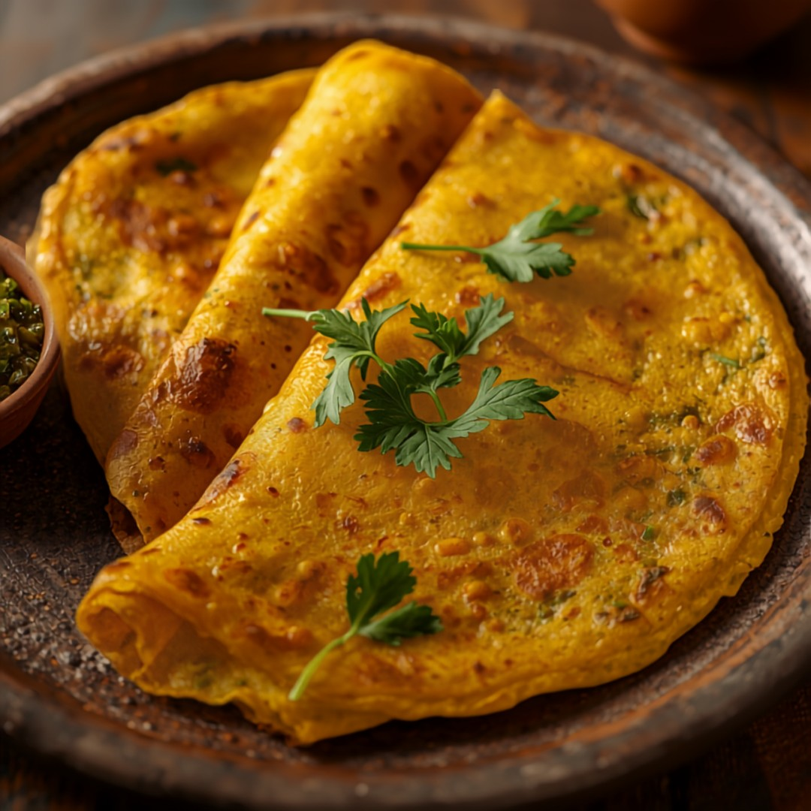

Isang tunay na malasang lentil crepe mula Hilagang India, gawa sa binabad na dilaw na moong dal, sibuyas, at mainit na sangkap -- likas na mataas sa protina at fiber, at mahinahon ang low-GI.
Impormasyon sa Nutrisyon (bawat serving)
Bakit Ito Bagay sa Diyetang Diabetic-Friendly
Sa 22g na carbs kada serving, sulit itong i-pair sa protein o fat at bantayan ang portion size para gradual lang ang pagtaas ng asukal sa dugo, at ang tinatayang glycemic index nitong ~35 ay nangangahulugang mabagal ma-digest ang carbs nito sa halip na biglang magpataas ng asukal sa dugo, at ang 11g na protein kada serving ay tumutulong din na pabagalin ang digestion at pakinisin ang anumang pagtaas pagkatapos kumain, at ang 6g na fiber kada serving ay nagdaragdag ng parehong epekto ng pagpapabagal.
Mga Sangkap
- 1 cup235 ml binabad na dilaw na moong dal
- 1/2 whole1/2 whole sibuyas
- 1 whole1 whole berdeng sili
- 1 tsp5 ml luya
- 1/2 tsp2 ml buto ng cumin
- 1/4 tsp1 ml luyang dilaw
- 1/4 tsp1 ml asin
- 1 tbsp15 ml mantika
- 2 tbsp30 ml sariwang wansoy
Nasa GlucoBeacon app na ang recipe na ito — idagdag agad sa iyong Shopping List at daily carb tracker sa isang tap, libre.
- 🍽️ Restaurant Advisor — 3,700+ menu items mula sa 53 chains
- 📷 AI Food Camera — i-point, i-scan, malaman agad ang carbs
- 🩺 A1C Estimator — mula sa mga naka-log na reading mo
Paraan ng Paggawa
- Salain ang binabad na moong dal at i-blend nang may kaunting tubig hanggang maging makapal at maibubuhos na batter.
- Ihalo ang sibuyas, berdeng sili, luya, buto ng cumin, luyang dilaw, asin, at wansoy.
- Painitin ang bahagyang hinaluan ng mantika na nonstick na kawali sa katamtamang init at ibuhos ang isang sandok na batter, ikalat nang manipis at bilog.
- Patakan ng kaunting mantika sa gilid at lutuin ng 2-3 minuto bawat gilid hanggang maging golden at matigas.
- Ihain nang mainit, kahit plain o may side na mint chutney o yogurt.